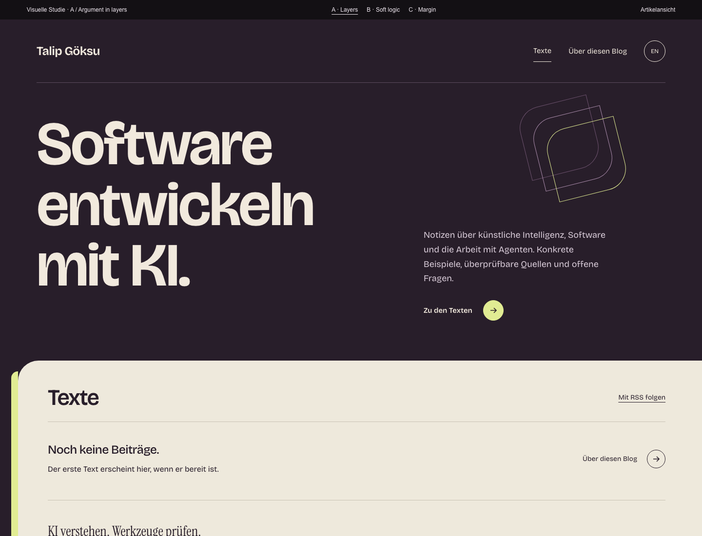
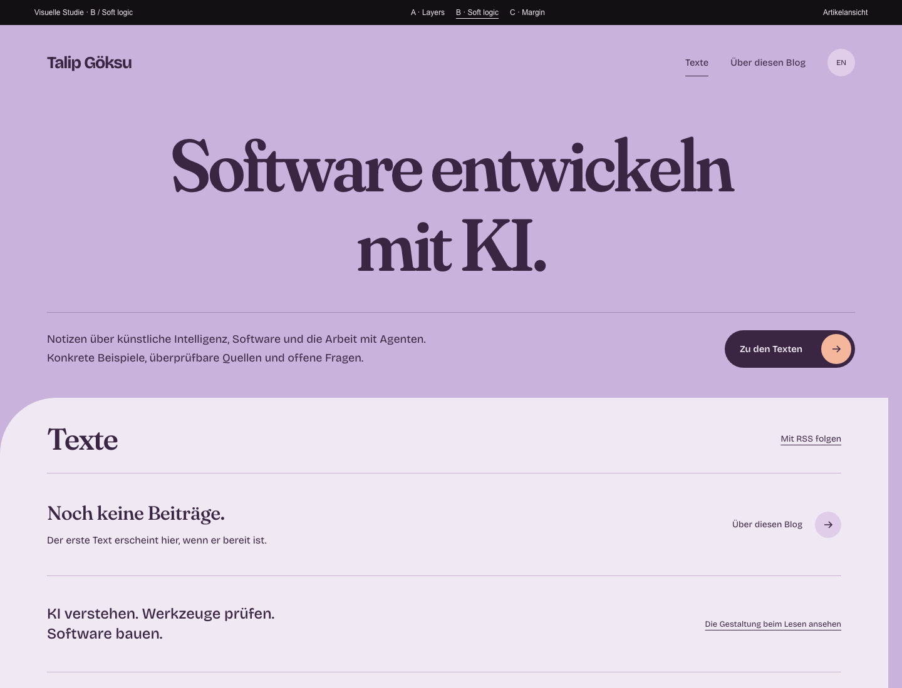
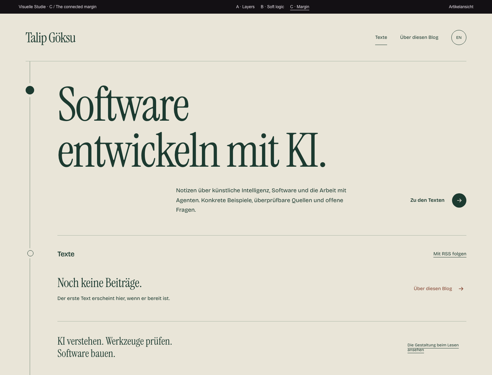

Layers
Confident, tactile, technical.

Wine-dark opening, a sharp citron edge and an offset paper reading plane. Characterful grotesk type; the exposed edge repeats through the system.
Each has an opening, a quiet reading treatment and a mobile composition. These are working studies to judge character and structure, using the same real public identity and honest empty index.
Confident, tactile, technical.

Wine-dark opening, a sharp citron edge and an offset paper reading plane. Characterful grotesk type; the exposed edge repeats through the system.
Warm, playful, expressive.

A lilac field, soft heavyweight serif type and a precise inset. A broad poster composition, with aubergine and apricot used as a connected family.
Calm, literary, precise.

Deep green ink and warm paper. A continuous margin connects the title, article index and source notes; a tall editorial serif gives it a personal voice.
Selected direction: A. Confirmed by the user’s direct correction. The A system is now being carried through the working FastAPI application. B and C remain unselected studies.
Prototype study only. The working FastAPI/HTMX implementation is preserved. No unfinished writing has been published. Your private context is absent from these pages.